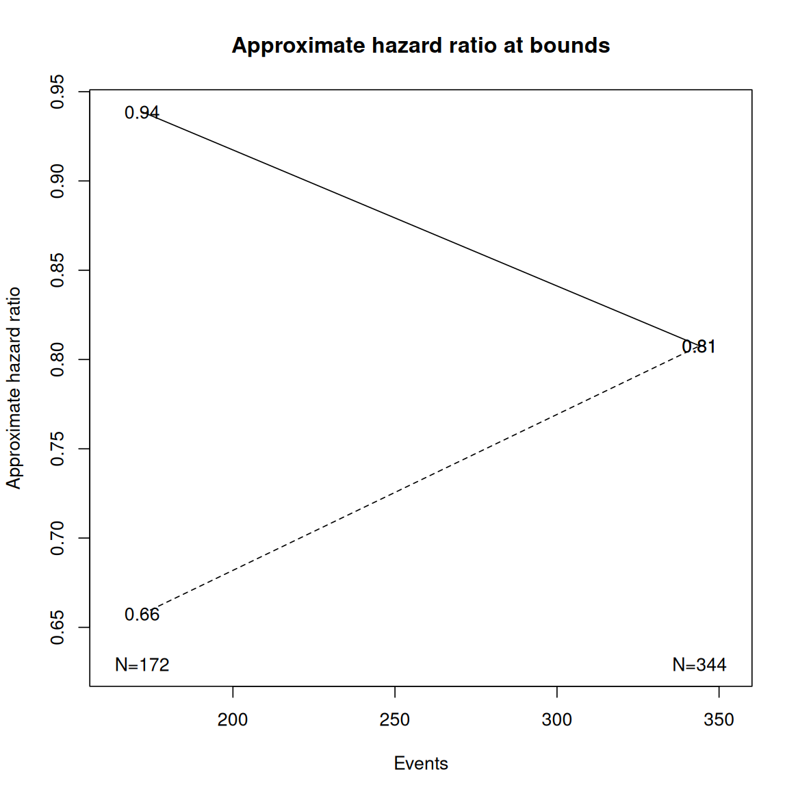
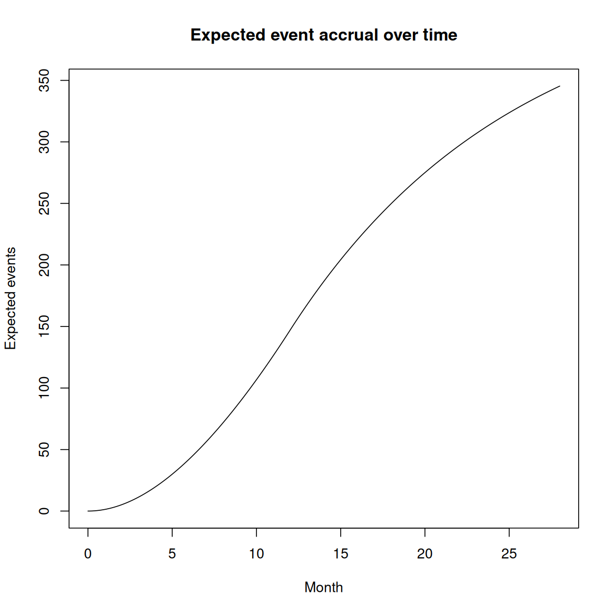

Introduction
This article/vignette provides a summary of functions in the
gsDesign package supporting design and
evaluation of trial designs for time-to-event outcomes. We do not focus
on detailed output options, but what numbers summarizing the design are
based on. If you are not looking for this level of detail and just want
to see how to design a fixed or group sequential design for a
time-to-event endpoint, see the vignette Basic time-to-event group
sequential design using gsSurv. If you already have a design and
want to evaluate power under alternate hazard ratios, enrollment
assumptions or analysis timing, see the vignette Power Computation
for Group Sequential Survival Designs for
gsSurvPower(). If you are translating SAS PROC SEQDESIGN
survival output to gsDesign, see the vignette Reproducing SAS PROC
SEQDESIGN survival designs in gsDesign.
The following functions support use of the very straightforward Schoenfeld (1981) approximation for 2-arm trials:
-
nEvents(): number of events to achieve power or power given number of events with no interim analysis. -
zn2hr(): approximate the observed hazard ratio (HR) required to achieve a targeted Z-value for a given number of events. -
hrn2z(): approximate Z-value corresponding to a specified HR and event count. -
hrz2n(): approximate event count corresponding to a specified HR and Z-value.
The above functions do not directly support sample size calculations. This is done with the Lachin and Foulkes (1986) method. Functions include:
-
nSurv(): More flexible enrollment scenarios; single analysis. -
gsSurv(): Group sequential design extension ofnSurv(). -
nSurvival(): Sample size restricted to single enrollment rate, single analysis; this has been effectively replaced and generalized bynSurv()andgsSurv().
Output for survival design information is supported in various formats:
-
gsBoundSummary(): Tabular summary of a design in a data frame. -
plot.gsDesign(): Various plot summaries of a design. -
gsHR(): Approximate HR required to cross a bound.
Schoenfeld approximation support
We will assume a hazard ratio \(\nu < 1\) represents a benefit of experimental treatment over control. We let \(\delta = \log\nu\) denote the so-called natural parameter for this case. Asymptotically the distribution of the Cox model estimate \(\hat{\delta}\) under the proportional hazards assumption is (Schoenfeld (1981)) \[\hat\delta\sim \text{Normal}(\delta=\log\nu, (1+r)^2/nr).\] The inverse of the variance is the statistical information: \[\mathcal I = nr/(1 + r)^2.\] Using a Cox model to estimate \(\delta\), the Wald test for \(\text{H}_0: \delta=0\) can be approximated with the asymptotic variance from above as:
\[Z_W\approx \frac{\sqrt {nr}}{1+r}\hat\delta=\frac{\ln(\hat\nu)\sqrt{nr}}{1+r}.\]
Also, we know that the Wald test \(Z_W\) and a standard normal version of the logrank \(Z\) are both asymptotically efficient and therefore asymptotically equivalent, at least under a local hypothesis framework. We denote the standardized effect size as
\[\theta = \delta\sqrt r / (1+r)= \log(\nu)\sqrt r / (1+r).\] Letting \(\hat\theta = -\sqrt r/(1+r)\hat\delta\) and \(n\) representing the number of events observed, we have \[\hat \theta \sim \text{Normal}(\theta, 1/ n).\] Thus, the standardized Z version of the logrank is approximately distributed as
\[Z\sim\text{Normal}(\sqrt n\theta,1).\] Treatment effect favoring experimental treatment compared to control in this notation corresponds to a hazard ratio \(\nu < 1\), as well as negative values of the standardized effect \(\theta\), natural parameter \(\delta\) and standardized Z-test.
Power and sample size with nEvents()
Based on the above, the power for the logrank test when \(n\) events have been observed is approximated by
\[P[Z\le z]=\Phi(z -\sqrt n\theta)=\Phi(z- \sqrt{nr}/(1+r)\log\nu).\] Thus, assuming \(n=100\) events and \(\delta = \log\nu=-\log(.7)\), and \(r=1\) (equal randomization) we approximate power for the logrank test when \(\alpha=0.025\) as
n <- 100
hr <- .7
delta <- log(hr)
alpha <- .025
r <- 1
pnorm(qnorm(alpha) - sqrt(n * r) / (1 + r) * delta)
#> [1] 0.4299155We can compute this with gsDesign::nEvents() as:
nEvents(n = n, alpha = alpha, hr = hr, r = r)
#> [1] 0.4299155We solve for the number of events \(n\) to see how many events are required to obtain a desired power
\[1-\beta=P(Z\ge \Phi^{-1}(1-\alpha))\] with
\[n = \left(\frac{\Phi^{-1} (1-\alpha)+\Phi^{-1}(1-\beta)}{\theta}\right)^2 =\frac{(1+r)^2}{r(\log\nu)^2}\left({\Phi^{-1} (1-\alpha)+\Phi^{-1}(1-\beta)}\right)^2.\] Thus, the approximate number of events required to power for HR=0.7 with \(\alpha=0.025\) one-sided and power \(1-\beta=0.9\) is
which, rounding up, matches (with tabular output):
The notation delta in the above table changes the sign
for the standardized treatment effect \(\theta\) in the above:
theta <- delta * sqrt(r) / (1 + r)
theta
#> [1] -0.1783375The se in the table is the estimated standard error for
the log hazard ratio \(\delta=\log\hat\nu\)
(1 + r) / sqrt(331 * r)
#> [1] 0.1099299Group sequential design
We can create a group sequential design for the above problem either
with \(\theta\) or with the fixed
design sample size. The parameter delta in
gsDesign() corresponds to standardized effect size with
sign changed \(-\theta\) in notation
used above and by Jennison and Turnbull
(2000), while the natural parameter, \(\log(\text{HR})\) is in the parameter
delta1 passed to gsDesign(). The name of the
effect size is specified in deltaname and the parameter
logdelta = TRUE indicates that delta input
needs to be exponentiated to obtain HR in the output below. This example
code can be useful in practice. We begin by passing the number of events
for a fixed design in the parameter n.fix (continuous, not
rounded) to adapt to a group sequential design. By rounding to integer
event counts with the toInteger() function we increase the
power slightly over the targeted 90%.
Schoenfeld <- gsDesign(
k = 2,
n.fix = nEvents(hr = hr, alpha = alpha, beta = beta, r = 1),
delta1 = log(hr)
) |> toInteger()
#> toInteger: rounding done to nearest integer since ratio was not specified as postive integer .
Schoenfeld |>
gsBoundSummary(deltaname = "HR", logdelta = TRUE, Nname = "Events") |>
lt()Information based design
Exactly the same result can be obtained with the following, passing
the standardized effect size theta from above to the
parameter delta in gsDesign().
We noted above that the asymptotic variance for \(\hat\theta\) is \(1/n\) which corresponds to statistical information \(\mathcal I=n\) for the parameter \(\theta\). Thus, the value
Schoenfeld$n.I
#> [1] 172 345corresponds both to the number of events and the statistical information for the standardized effect size \(\theta\) required to power the trial at the desired level. Note that if you plug in the natural parameter \(\delta= -\log\nu > 0\), then \(n.I\) returns the statistical information for the log hazard ratio.
The reader may wish to look above to derive the exact relationship between events and statistical information for \(\delta\).
Approximating boundary characteristics
Another application of the Schoenfeld
(1981) method is to approximate boundary characteristics of a
design. We will consider zn2hr(), gsHR() and
gsBoundSummary() to approximate the treatment effect
required to cross design bounds. zn2hr() is complemented by
the functions hrn2z() and hrz2n(). We begin
with the basic approximation used across all of these functions in this
section and follow with a sub-section with example code to reproduce
some of what is in the table above.
We return to the following equation from above:
\[Z\approx Z_W\approx \frac{\sqrt {nr}}{1+r}\hat\delta=\frac{\ln(\hat\nu)\sqrt{nr}}{1+r}.\] By fixing \(Z=z, n\) we can solve for \(\hat\nu\) from the above:
\[\hat{\nu} = \exp(z(1+r)/\sqrt{rn}).\] By fixing \(\hat\nu\) and \(z\), we can solve for the corresponding number of events required: \[ n = (z(1+r)/\log(\hat{\nu}))^2/r.\]
Examples
We continue with the Schoenfeld example event
counts:
Schoenfeld$n.I
#> [1] 172 345We reproduce the approximate hazard ratios required to cross efficacy bounds using the Schoenfeld approximations above:
gsHR(
z = Schoenfeld$upper$bound, # Z-values at bound
i = 1:2, # Analysis number
x = Schoenfeld, # Group sequential design from above
ratio = r # Experimental/control randomization ratio
)
#> [1] 0.6572433 0.8079049For the following examples, we assume \(r=1\).
r <- 1- Assuming a Cox model estimate \(\hat\nu\) and a corresponding event count, approximately what Z-value (p-value) does this correspond to? We use the first equation above:
hr <- .73 # Observed hr
events <- 125 # Events in analysis
z <- log(hr) * sqrt(events * r) / (1 + r)
c(z, pnorm(z)) # Z- and p-value
#> [1] -1.75928655 0.03926443We replicate the Z-value with
hrn2z(hr = hr, n = events, ratio = r)
#> [1] 1.759287- Assuming an efficacy bound Z-value and event count, approximately what hazard ratio must be observed to cross the bound? We use the second equation above:
We can reproduce this with zn2hr() by switching the sign
of z above; note that the default is ratio = 1
for all of these functions and often is not specified:
zn2hr(z = -z, n = events, ratio = r)
#> [1] 0.6991858- Finally, if we want an observed hazard ratio \(\hat\nu = .8\) to represent a positive result, how many events would be need to observe to achieve a 1-sided p-value of 0.025? assuming 2:1 randomization? We use the third equation above:
This is replicated with
hrz2n(hr = hr, z = z, ratio = r)
#> [1] 347.1683Lachin and Foulkes design
For the purpose of sample size and power for group sequential design,
the Lachin and Foulkes (1986) is
recommended based on substantial evaluation not documented further here.
We try to make clear here what some of the strengths and weaknesses of
both the Lachin and Foulkes (1986) method
as well as its implementation in the gsDesign::nSurv()
(fixed design) and gsDesign::gsSurv() (group sequential)
functions. For historical and testing purposes, we also discuss use of
the less flexible gsDesign::nSurvival() function that was
independently programmed and can be used for some limited validations of
gsDesign::nSurv().
Model assumptions
Some detail in specification comes With the flexibility allowed by the Lachin and Foulkes (1986) method. The model assumes
- Piecewise constant enrollment rates with a target fixed duration of enrollment; since inter-arrival times follow a Poisson process, the actual enrollment time to achieve the targeted enrollment is random.
- A fixed minimum follow-up period.
- Piecewise exponential failure rates for the control group.
- A single, constant hazard ratio for the experimental group relative to the control group.
- Piecewise exponential loss-to-follow-up rates.
- A stratified population.
- A fixed randomization ratio of experimental to control group assignment.
Other than the proportional hazards assumption, this allows a great
deal of flexibility in trial design assumptions. While Lachin and Foulkes (1986) adjusts the piecewise
constant enrollment rates proportionately to derive a sample size,
gsDesign::nSurv() also enables the approach of Kim and Tsiatis (1990) which fixes enrollment
rates and extends the final enrollment rate duration to power the trial;
the minimum follow-up period is still assumed with this approach. We do
not enable the drop-in option proposed in Lachin
and Foulkes (1986).
The two practical differences the Lachin and Foulkes (1986) method has from the Schoenfeld (1981) method are:
- By assuming enrollment, failure and dropout rates the method delivers sample size \(N\) as well as events required.
- The variance for the log hazard ratio \(\hat\delta\) is computed differently and both a null (\(\sigma^2_0\)) and alternate hypothesis (\(\sigma^2_1\)) variance are incorporated through the formula \[N = \left(\frac{\Phi^{-1}(1-\alpha)\sigma_0 + \Phi^{-1}(1-\beta)\sigma_1}{\delta}\right).\] The null hypothesis is derived by averaging the alternate hypothesis rates, weighting according to the proportion randomized in each group.
Fixed design
We will use the same hazard ratio 0.7 as for the Schoenfeld (1981) sample size calculations above. We assume further that the trial will enroll for a constant rate for 12 months, have a control group median of 8 months (exponential failure rate \(\lambda = \log(2)/8\)), a dropout rate of 0.001 per month, and 16 months of minimum follow-up. As before, we assume a randomization ratio \(r=1\), one-sided Type I error \(\alpha=0.025\), 90% power which is equivalent to Type II error \(\beta=0.1\).
r <- 1 # Experimental/control randomization ratio
alpha <- 0.025 # 1-sided Type I error
beta <- 0.1 # Type II error (1 - power)
hr <- 0.7 # Hazard ratio (experimental / control)
controlMedian <- 8
dropoutRate <- 0.001 # Exponential dropout rate per time unit
enrollDuration <- 12
minfup <- 16 # Minimum follow-up
Nlf <- nSurv(
lambdaC = log(2) / controlMedian,
hr = hr,
eta = dropoutRate,
T = enrollDuration + minfup, # Trial duration
minfup = minfup,
ratio = r,
alpha = alpha,
beta = beta
)
cat(paste("Sample size: ", ceiling(Nlf$n), "Events: ", ceiling(Nlf$d), "\n"))
#> Sample size: 422 Events: 330Recall that the Schoenfeld (1981) method recommended 331 events. The two methods tend to yield very similar event count recommendations, but not the same. Other methods will also differ slightly; see Lachin and Foulkes (1986). Sample size recommendations can vary more between methods.
We can get the same result with the nSurvival() routine
since only a single enrollment, failure and dropout rate is proposed for
this example.
lambda1 <- log(2) / controlMedian
nSurvival(
lambda1 = lambda1,
lambda2 = lambda1 * hr,
Ts = enrollDuration + minfup,
Tr = enrollDuration,
eta = dropoutRate,
ratio = r,
alpha = alpha,
beta = beta
)
#> Fixed design, two-arm trial with time-to-event
#> outcome (Lachin and Foulkes, 1986).
#> Study duration (fixed): Ts=28
#> Accrual duration (fixed): Tr=12
#> Uniform accrual: entry="unif"
#> Control median: log(2)/lambda1=8
#> Experimental median: log(2)/lambda2=11.4
#> Censoring median: log(2)/eta=693.1
#> Control failure rate: lambda1=0.087
#> Experimental failure rate: lambda2=0.061
#> Censoring rate: eta=0.001
#> Power: 100*(1-beta)=90%
#> Type I error (1-sided): 100*alpha=2.5%
#> Equal randomization: ratio=1
#> Sample size based on hazard ratio=0.7 (type="rr")
#> Sample size (computed): n=422
#> Events required (computed): nEvents=330Group sequential design
Now we produce a group sequential design with a default asymmetric design with a futility bound based on \(\beta\)-spending. We round event counts down and round total sample size to an integer allocation.
k <- 2 # Total number of analyses
lfgs <- gsSurv(
k = 2,
lambdaC = log(2) / controlMedian,
hr = hr,
eta = dropoutRate,
T = enrollDuration + minfup, # Trial duration
minfup = minfup,
ratio = r,
alpha = alpha,
beta = beta
) |> toInteger()
lfgs |>
gsBoundSummary() |>
lt()Although we did not use the Schoenfeld (1981) for sample size, it is still used for the approximate HR at bound calculation above:
events <- lfgs$n.I
z <- lfgs$upper$bound
zn2hr(z = z, n = events) # Schoenfeld approximation to HR
#> [1] 0.6574636 0.8076464Plotting
There are various plots available. The approximate hazard ratios
required to cross bounds again use the Schoenfeld
(1981) approximation. For a ggplot2 version of
this plot, use the default base = FALSE.
plot(lfgs, pl = "hr", dgt = 2, base = TRUE)
Event accrual
The variance calculations for the Lachin and Foulkes method are mostly determined by expected event accrual under the null and alternate hypotheses. The null hypothesis characterized above is seemingly designed so that event accrual will be similar under each hypothesis. You can see the expected events accrued at each analysis under the alternate hypothesis with:
tibble::tibble(
Analysis = 1:2,
`Control events` = lfgs$eDC,
`Experimental events` = lfgs$eDE
) |>
lt()It is worth noting that if events accrue at the same rate in both the null and alternate hypothesis, then the expected duration of time to achieve the targeted events would be shortened. Keep in mind that there can be many reasons events will accrue at a different rate than in the design plan.
The expected event accrual of events over time for a design can be computed as follows:
Month <- seq(0.025, enrollDuration + minfup, .025)
plot(
c(0, Month),
c(0, sapply(Month, function(x) {
nEventsIA(tIA = x, x = lfgs)
})),
type = "l", xlab = "Month", ylab = "Expected events",
main = "Expected event accrual over time"
)
On the other hand, if you want to know the expected time to accrue 25% of the final events and what the expected enrollment accrual is at that time, you compute using:
b <- tEventsIA(x = lfgs, timing = 0.25)
cat(paste(
" Time: ", round(b$T, 1),
"\n Expected enrollment:", round(b$eNC + b$eNE, 1),
"\n Expected control events:", round(b$eDC, 1),
"\n Expected experimental events:", round(b$eDE, 1), "\n"
))
#> Time: 8.9
#> Expected enrollment: 327.1
#> Expected control events: 49.3
#> Expected experimental events: 37For expected accrual of events without a design returned by
gsDesign::gsSurv(), see the help file for
gsDesign::eEvents().